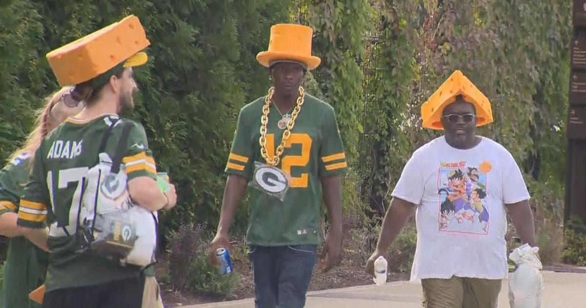

# Welcome to Wisconsin!
Welcome to Wisconsin, where the natural beauty of the Great Lakes meets the warm hospitality of the Midwest. Whether you’re here to explore our vibrant cities, wander through our scenic parks, or enjoy the rich culture and history, Wisconsin offers something for everyone. We’re glad you’re here and can’t wait for you to experience everything that makes our state so special.
# Why Move to Wisconsin?
1. Affordable Living
One of the most compelling reasons to move to Wisconsin is its affordable cost of living. Housing is reasonably priced compared to national averages, and with low property taxes, you can find your dream home without breaking the bank. Additionally, the state offers a strong job market, particularly in sectors like manufacturing, healthcare, and education, providing ample opportunities for a comfortable life.
2. Natural Beauty
Wisconsin is a paradise for nature lovers. From the stunning shores of Lake Michigan to the rolling hills of the Driftless Area, the state boasts a diverse landscape that changes with the seasons. Enjoy boating and fishing in the summer, hiking and camping in the fall, and skiing or snowmobiling in the winter. The changing seasons bring new adventures, making every day an opportunity to explore the great outdoors.
3. Rich Cultural Heritage
Wisconsin’s cultural scene is as rich as its landscapes. The state is home to a vibrant arts community, with numerous theaters, galleries, and music festivals. Milwaukee, known for its brewing history, offers a lively downtown with museums, restaurants, and sports events. Madison, the state capital, is a hub of education and innovation, with the University of Wisconsin driving a culture of research and creativity. Don’t forget to indulge in Wisconsin’s famous cheeses and attend a traditional fish fry—you’ll quickly see why these are beloved local traditions.
# Cheeseheads: Embracing Wisconsin Culture
Moving to Wisconsin means more than just changing your address; it’s about embracing a rich and vibrant culture that celebrates its unique traditions and quirky charms. One of the most iconic symbols of Wisconsin is the "Cheesehead," a playful nod to the state’s famous dairy industry that has evolved into a proud badge of honor. Whether you’re cheering on the Green Bay Packers at Lambeau Field, enjoying a local festival, or savoring the state’s world-renowned cheeses, becoming a Cheesehead is all about immersing yourself in the community spirit and celebrating the joys of life in Wisconsin. From indulging in fresh cheese curds to participating in a Friday night fish fry, you’ll quickly find that being a Cheesehead is more than just a label—it’s a way of life that welcomes you with open arms
The Wisconsin State Capitol
The Wisconsin State Capitol, located in Madison, is a stunning example of Renaissance Revival architecture. Completed in 1917, it remains the tallest building in Madison due to height restrictions in place to preserve its prominence. Learn more about the Capitol here.
# Discover Wisconsin: The Heart of the Midwest
Wisconsin, known as "America’s Dairyland," is a state that offers a rich blend of natural beauty, cultural heritage, and economic vitality. Nestled in the Great Lakes region, Wisconsin is home to diverse landscapes, from the tranquil shores of Lake Michigan to the rolling hills of the Driftless Area. With a population of nearly 6 million, Wisconsin is a state where urban sophistication meets rural charm. This guide provides an overview of what makes Wisconsin unique, highlighting its population, geography, economy, culture, education, and recreational opportunities. Whether you're interested in exploring vibrant cities like Milwaukee and Madison or seeking outdoor adventures in the state's many parks and lakes, Wisconsin has something for everyone.
| Category | Details | Interesting Fact | Top Locations |
|---|---|---|---|
| Population | 5.9 million (2023 estimate) | 20th most populous state in the U.S. | Milwaukee, Madison, Green Bay |
| Geography | Great Lakes region, bordering Lake Michigan | Over 15,000 lakes across the state | Door County, Apostle Islands, Kettle Moraine |
| Economy | Diverse: Manufacturing, Agriculture, Tourism | Known as "America’s Dairyland" | Milwaukee (Brewing), Green Bay (Cheese), Madison (Tech) |
| Culture | Rich in history, arts, and local traditions | Home to the largest music festival, Summerfest | Milwaukee (Art Museum), Madison (Capitol Building) |
| Education | Home to the University of Wisconsin System | UW-Madison ranks among top public universities | Madison, Eau Claire, La Crosse |
| Recreation | Outdoor activities: Hiking, Fishing, Skiing | Wisconsin Dells is the "Waterpark Capital" | Wisconsin Dells, Apostle Islands, Lake Geneva |